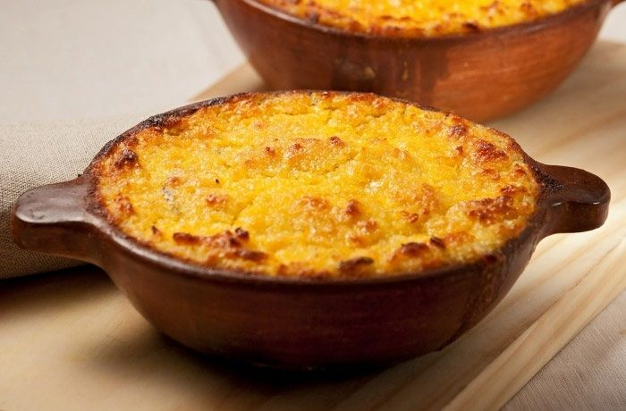

Pastel de Choclo!!

Un plato tipico Chileno
El pastel de choclo es un plato típico de la gastronomía de varios países de América Latina, especialmente en Chile y Perú. Consiste en una especie de pastel o tarta salada que tiene como ingrediente principal el choclo, que es maíz tierno o maíz dulce.
El pastel de choclo es un plato tradicional de la gastronomía latinoamericana, y su origen se remonta a la época precolombina en la región andina de Sudamérica.
Ingredientes
- Maiz
- Leche
- Azucar
- Huevo
- Carne molida
- Cebolla
- Ajo
- Aceitunas
- Pasas
- Aceite
Pasos
- Precalienta el horno a 180°C (350°F).
- Prepara el relleno: En una sartén grande, calienta un poco de aceite de cocina a fuego medio. Agrega la cebolla picada y el ajo picado, y sofríelos hasta que estén dorados y fragantes.
- Agrega la carne molida a la sartén y cocina hasta que esté bien dorada y cocida. Agrega el comino, el orégano, las aceitunas negras (y pasas si las estás usando), y sazona con sal y pimienta al gusto. Cocina por unos minutos para que los sabores se mezclen. Reserva el relleno.
- Prepara la masa de choclo: En una licuadora o procesadora de alimentos, mezcla los granos de choclo, la leche, el azúcar, la manteca o mantequilla, los huevos, la sal y la pimienta. Procesa hasta obtener una mezcla homogénea y cremosa.
- En una fuente para horno grande y apta para horno, coloca una capa de la mitad de la masa de choclo en la base.
- Agrega el relleno de carne cocida sobre la capa de masa de choclo.
- Cubre el relleno con rodajas de huevo duro.
- Agrega el resto de la masa de choclo sobre el relleno, nivelándola con una espátula.
- Opcionalmente, puedes decorar la parte superior con unas hojas de albahaca o perejil.
- Hornea en el horno precalentado durante aproximadamente 40-50 minutos, o hasta que la parte superior esté dorada y la masa de choclo esté cocida y firme.
- Deja enfriar un poco antes de servir. El pastel de choclo se disfruta mejor caliente.